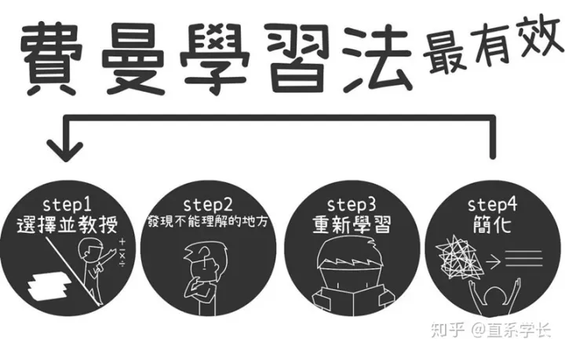

作者:XXXXXXXXXXXXXXX
据研究表明，其实大部分人的智力水平相差不大，但是学习力却大相径庭，造成这样差异的更多地
是我们的学习方法、学习习惯等可控因素。回顾自己的学习生涯，最遗憾的便是在学校中一直只是
学习知识，却忽略了学习方法、学习技巧这些十分重要的学习技巧。今天本狗将会为大家介绍史上
最强终极学习法——费曼学习法。
费曼学习法是我大学时经常使用的学习方法，适合较短时间内深入学习（期末考试抱大腿），对于
这个方法有点相见恨晚的感觉。最初是来自理查德·菲利普斯·费曼（美籍犹太裔物理学家，加州理
工学院物理学教授，1965年诺贝尔物理奖得主）。在教育方面，其最大的贡献在于费曼技巧，也
就是说能够用最单的语言介绍任何概念，无论这个概念多么复杂。
费曼学习法的核心要义是通过复述概念并反馈结果来加强记忆。

下面我们来剖析一下费曼学习法的四大步骤吧。